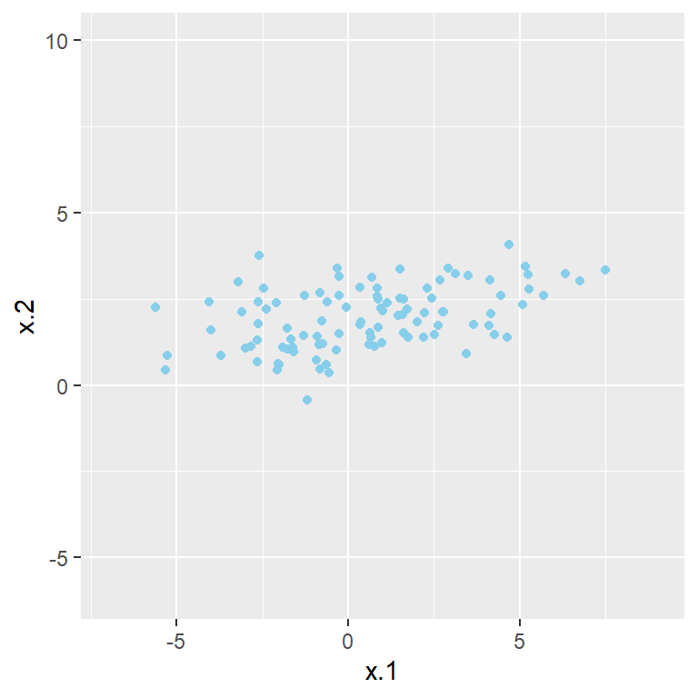
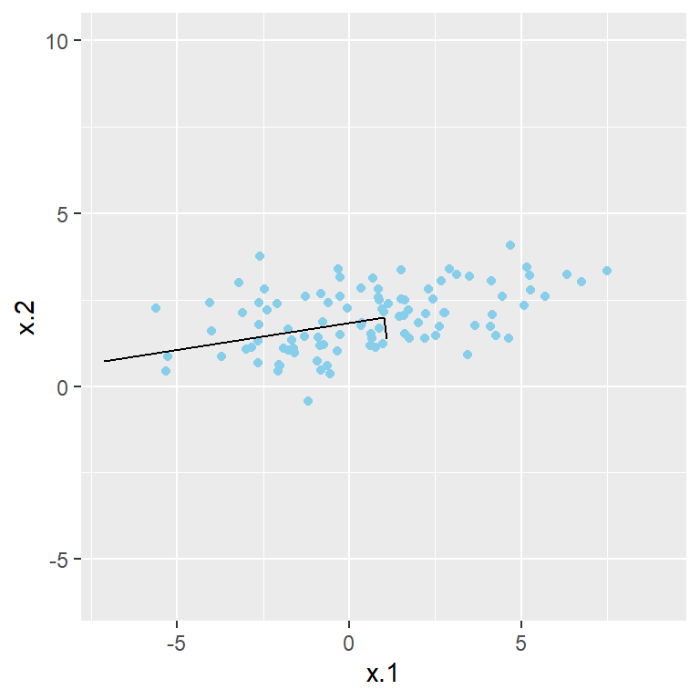
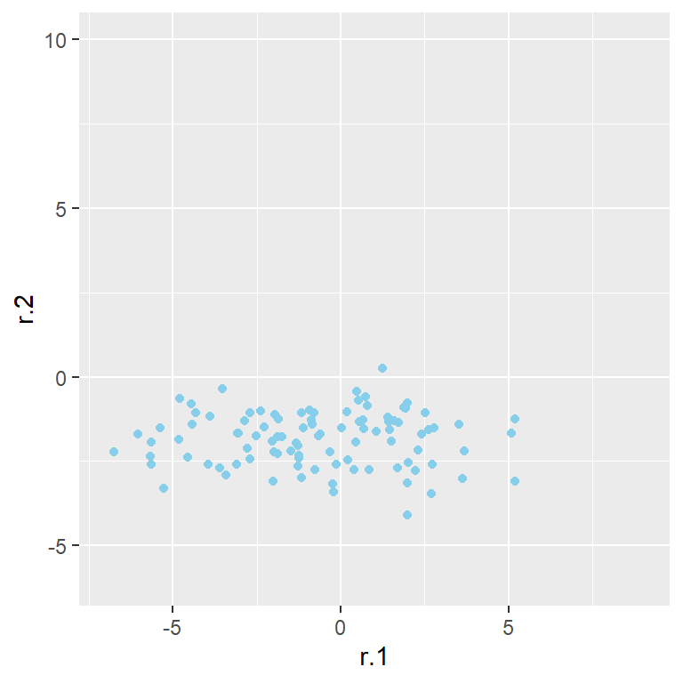
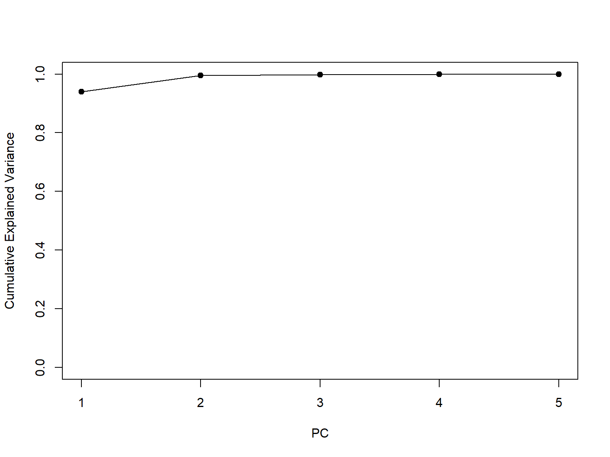
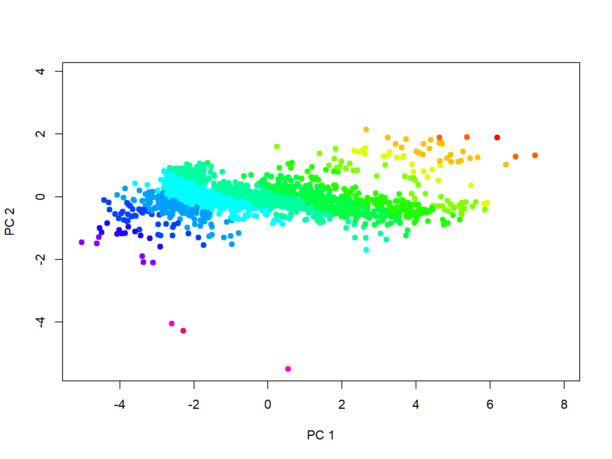

Eigendecomposition and PCA
36-350 – Statistical Computing
Week 9 – Spring 2022
Eigenvectors and Eigenvalues
Assume you have an \(n \times d\) matrix \(A\). A vector \(x\) is dubbed an eigenvector (technically, a right eigenvector) if the following equation holds: \[
A x = \lambda x \,.
\] This equation says that the action of matrix multiplying \(x\) by \(A\) is the same as stretching the vector \(x\) by a scalar factor \(\lambda\), where \(\lambda\) is the eigenvalue associated with the eigenvector \(x\). The direction of \(x\) is unchanged.
To find all the eigenvectors and eigenvalues associated with the matrix \(A\), one can decompose it: \[
A \rightarrow U \Lambda V^T \,,
\] where the columns of the \(d \times d\) matrix \(V\) are the (right) eigenvectors and \(\Lambda\) is a diagonal matrix containing the eigenvalues. (We generally don’t care about \(U\) in standard statistics-centric applications.) Note that the “T” indicates that in the equation, \(V\) is transposed (meaning, its values are flipped across the matrix diagonal, so that the lower-left element moves to the upper-right, etc.)
If \(A\) is a square matrix, you can think of eigendecomposition as breaking up the transformation represented by \(A\) into three transformations: a rotation, a stretch, and then another rotation. For our purposes today, \(A\) is a square matrix. How \(A\) is defined depends on the algorithm we are applying.
Eigenvectors and Eigenvalues
There are various (ultimately equivalent) ways by which to compute the eigenvectors and eigenvalues of a square matrix \(A\) in R.
First, let’s define a set of data (via sampling from a bivariate normal):
suppressMessages(library(MASS))
suppressMessages(library(ggplot2))
mu = c(1,2)
sigma = c(3,1)
rho = matrix(c(1,0.5,0.5,1),2,2)
Sigma = rho * (sigma %o% sigma)
set.seed(404)
data = mvrnorm(100,mu,Sigma)
df = data.frame(data)
names(df) = c("x.1","x.2")
ggplot(data=df,mapping=aes(x=x.1,y=x.2)) + geom_point(col="skyblue") + xlim(-7,9) + ylim(-6,10)

Eigenvectors and Eigenvalues
Let’s suppose that \(A\) is the covariance matrix of our data, and we wish to eigendecompose it:
A = cov(df)
# Option 1: singular value decomposition
svd(A)
## $d
## [1] 8.2171953 0.6383897
##
## $u
## [,1] [,2]
## [1,] -0.9879550 -0.1547417
## [2,] -0.1547417 0.9879550
##
## $v
## [,1] [,2]
## [1,] -0.9879550 -0.1547417
## [2,] -0.1547417 0.9879550
# Option 2: eigendecomposition
eigen(A)
## eigen() decomposition
## $values
## [1] 8.2171953 0.6383897
##
## $vectors
## [,1] [,2]
## [1,] -0.9879550 0.1547417
## [2,] -0.1547417 -0.9879550
Note that the sign is arbitrary. For example, a two-element eigenvector might be defined in the direction \((1,1)\) or in the direction \((-1,-1)\)…it doesn’t ultimately make any difference so long as all the signs in the eigenvector are changed.
Eigenvectors and Eigenvalues
l = eigen(A)$values
v = eigen(A)$vectors
ggplot(data=df,mapping=aes(x=x.1,y=x.2)) + geom_point(col="skyblue") + xlim(-7,9) + ylim(-6,10) +
geom_segment(x=1,xend=1+l[1]*v[1,1],y=2,yend=2+l[1]*v[2,1]) +
geom_segment(x=1,xend=1+l[2]*v[1,2],y=2,yend=2+l[2]*v[2,2])

Rotation via Eigenvectors
df.new = data.frame(data %*% v) # matrix-multiply our observed data with V
names(df.new) = c("r.1","r.2")
ggplot(data=df.new,mapping=aes(x=r.1,y=r.2)) + geom_point(col="skyblue") + xlim(-7,9) + ylim(-6,10)
## Warning: Removed 2 rows containing missing values (geom_point).

cor(df.new) # Note: after rotation, the correlation coefficient is (effectively) zero!
## r.1 r.2
## r.1 1.000000e+00 -5.980403e-17
## r.2 -5.980403e-17 1.000000e+00
Principal Components Analysis
What we just showed on the last slide was, in essence, the rotation implicit in principal components analysis, or PCA.
(What we left out was the standardization of the data that one generally does: subtracting the sample mean in each column of the data frame from the data values in that column, and then dividing the difference by the sample standard deviation of the column’s data. We generally standardize to mitigate the effect of units.)
PCA is an algorithm in which one takes the (assumed to be numerical) standardized data in a data frame, finds their centroid, and rotates the data around that centroid. The columns of the rotation matrix are the eigenvectors of the standardized data. (In PCA-land, each eigenvector is dubbed a loading vector; the transformed standardized data are the PCA scores.)
The result of PCA is a data frame of scores in which the data in different columns are uncorrelated. Not necessarily independent, mind you, but uncorrelated: there is no linear dependency between the data in different columns.
Principal Components Analysis
The first eigenvector defines the direction of greatest variability in the data (see the green line below). (This is the first principal component.) The second eigenvector defines the direction orthogonal to the first direction in which the variability of the data is maximized (see the blue line below). Etc.

The first eigenvalue is the variance of the data along the direction of the first principal component. Etc.
PCA: Example
The first principal component (i.e., the eigenvectors of the covariance matrix) defines, as stated above, a direction of greatest variability within the dataset. Let’s look at an example:
load(url("http://www.stat.cmu.edu/~mfarag/350/draco_photometry.Rdata"))
df = data.frame(mag.u,mag.g,mag.r,mag.i,mag.z)
(p = prcomp(df,scale=TRUE))
## Standard deviations (1, .., p=5):
## [1] 2.16740177 0.53107185 0.11341922 0.07171823 0.04821668
##
## Rotation (n x k) = (5 x 5):
## PC1 PC2 PC3 PC4 PC5
## mag.u -0.4066213 -0.888871700 -0.1708599 0.1229690 -0.015865793
## mag.g -0.4599055 0.008269154 0.5476288 -0.6988800 0.009378588
## mag.r -0.4574792 0.213337966 0.3521679 0.5865892 0.526393843
## mag.i -0.4563442 0.265085004 -0.0181101 0.2784823 -0.802246536
## mag.z -0.4534409 0.306684814 -0.7392966 -0.2735069 0.281016612
Virtually all the numbers for PC1 are the same. This means that all of the original variables are nearly equally important in defining the direction of greatest variability. (Looked at another way, it means that if mag.u is small for a given object, then all the magnitudes for that object will probably be small; if it is large, all the magnitudes will probably be large).
PC2 indicates that mag.u is the primary source of data variability in directions orthogonal to PC1. Etc.
PCA: Proportion of Variance Explained
In the example on the previous slide, the variance along the first principal component is \(2.167^2 = 4.698\). The total variance is the sum of the squares of the standard deviations: \(5\). (There are five variables, each standardized so as to have variance 1.) Hence the proportion of variance explained by the first principal component is \(4.698/5 = 0.9395\).
## [1] 4.69763
## [1] 5
p$sdev[1]^2/sum(p$sdev^2)
## [1] 0.9395261
plot(1:5,cumsum(p$sdev^2)/sum(p$sdev^2),pch=19,xlab="PC",
ylab="Cumulative Explained Variance",ylim=c(0,1))
lines(1:5,cumsum(p$sdev^2)/sum(p$sdev^2))

PCA: Dimension Reduction
The proportion of variance explained is useful in dimension reduction. In the example on the last slide, 93.95% of the variance is explained by one variable, and 99.59% with two variables, meaning that if we were to replace our original five-dimensional data frame with a two-dimensional one with the first two PC score vectors, we would lose virtually no information about the data. Dimension reduction can be handy for both data visualization and for subsequent regression and/or classification.
The basic rule of thumb for selecting the number of dimensions to retain is to pick the smallest number of PCs that explain greater than 90% of the variance. In the example on the previous slide we might pick 1 PC…but since it is easy to visualize two, we could also keep both. (Below, we color code by the value of mag.u, which dominates PC 2.)
pc.score = as.matrix(scale(df)) %*% p$rotation # pc.score is also output by prcomp() as "x"
palette(rainbow(16))
plot(pc.score[,1],pc.score[,2],pch=19,xlab="PC 1",ylab="PC 2",
col=16*(mag.u-min(mag.u))/(max(mag.u)-min(mag.u)))
